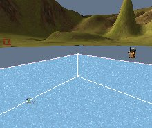
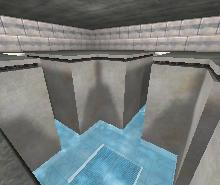

UDN
Search public documentation:
ExampleMapsRisingWater
Interested in the Unreal Engine?
Visit the Unreal Technology site.
Looking for jobs and company info?
Check out the Epic games site.
Questions about support via UDN?
Contact the UDN Staff
Rising Water Example Maps
Document Summary: These examples show how to make rising water in two ways; with a mover and a fluid surface. Recommended for intermediate to advanced users; requires .ini editing and UCC Make. Document Changelog: Last updated by Tom Lin (DemiurgeStudios?), for document summary. Original author was Lode Vandevenne (UdnStaff).Introduction
There are two examples that show how to make rising water in two ways. One for the 927 build and one for the 2136 build. The first shows that it's possible to move WaterVolumes, and a way to move the bottom of a waterfall emitter. The second shows a small room that fills with water and then drains, but the water surface is a fluid surface that reacts to encroaching players.Rising Water 1
Basicly, this map has a terrain with a waterfall and a small pool. When you hit a trigger, the pool slowly starts rising until the complete terrain is under water.The bStatic problem
The moving water is done with a large moving water volume. The surface of the water is a mover, and the moving water volume is attached to it: it's AttachTag is set to the tag of the mover. Too bad, things can only move if they have the setting bStatic = False. This wouldn't have been a problem if bStatic was a setting like the others, but it isn't: the bStatic setting of an actor in the map always must be the same as in the Default Properties. In the Default Properties of the WaterVolume, bStatic = True, so if you don't want to change the default settings of the classic WaterVolume, you have to make a SubClass of WaterVolume, for example MovingWaterVolume, and set bStatic to False in the Default Properties of this new actor. If you can see the bStatic setting in your Default Properties (should be in Advanced), you're lucky: you just have to change the setting there. But normally the bStatic setting is hidden so you can't edit it in the Default Properties, so the only thing you can do is export the new actor class, then open its *.uc file (after you exported it, it should be in the Unreal Root folder --> YourPackage --> Classes --> MovingWaterVolume.uc. In the *.uc file add the line bStatic=False in defaultproperties, so it looks like this:
defaultproperties
{
bStatic=False
}
Then make sure there is no YourPackage.u file that contains the MovingWaterVolume in the system folder, and in UW.ini add the line EditPackages=YourPackage under [Editor.EditorEngine]. Then in a console go to the System folder and run the command "ucc make". Normally, there now should be a new YourPackage.u file in the system folder. Import it in the editor, and the MovingWaterVolume should now have bStatic=False. Because I wanted the MovingWaterVolume to be in MyLevel, I renamed the package YourName.u to MyLevel.u after ucc made it, and imported that one into the editor. If bStatic is really False, the MovingWaterVolume should now be able to follow the mover, if it doesn't follow, it may still have bStatic=True for some reason.
This is what the surface-mover and the MovingWaterVolume look like when the water is low and high:


The Waterfall
The waterfall is created with an emitter. Waterfalls like this are in demo maps such as DEMO-Materials.unr, or in the EmittersReference. The waterfall ends in a small pool which starts rising when you hit the trigger. When this pool starts rising, the end of the waterfall needs to rise as well, otherwise the waterfall will continue below the surface. If your waterfall has a mist emitter at the bottom, just attach this emitter to the surface-mover, and the mist will rise with the water. But you can't attach the emitter of the waterfall itself, because the top of the waterfall doesn't have to move, only the bottom. A possible solution for the waterfall is to add a moving invisible Static Mesh at the bottom of the waterfall, and make the particles die when they hit this Static Mesh: set UseCollision to True in the Collision settings of the emitter, and set MaxCollisions to 1. Then you have to make sure the invisible Static Mesh is the first (and last) thing the particles will hit, so make sure none of the particles will hit the terrain or they'll die too soon. If the Static Mesh now moves together with the surface of the water, the end of the waterfall will move as well. In Build 927, particles don't collide on a normal Mover, so you have to use a new Static Mesh subclass and again set bStatic to False like the MovingWaterVolume.Possible Improvements
If you are standing on the ground while the volume rises, the engine won't detect that you're inside a WaterVolume now and you can keep walking around. The only solution would be to reprogram the WaterVolume or the players to detect this, or to change the state of the player somehow. The rising water looks somewhat unrealistic, especially on terrain, because a real water surface is just so much more than a static, flat surface (in a cube room it would have looked a little more realistic). With a FluidSurface, it would have looked more realistic, but it's impossible to move FluidSurfaces. There may be a solution for this later.Rising Water 2
This is an example using the techniques above only using the new fluid surface in 2136. This gives more realistic water effects. The problem of standing still while the water volume moves over you still applies. If you stand still and look at the ground it won't register that you are now in a water volume.

Downloads
Below you can download a compressed archive that contains the content for this example:- 927-risingwater.zip (for Unreal Engine 2 build 927)
- 2136-risingwater.zip (for Unreal Engine 2 build 2136)